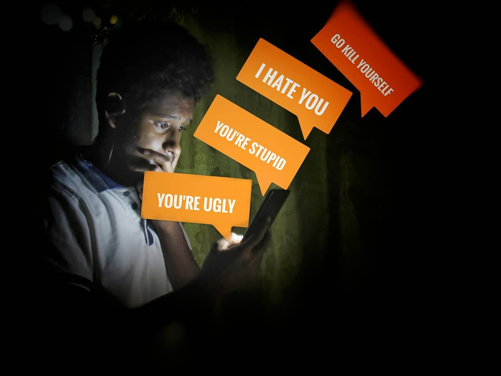
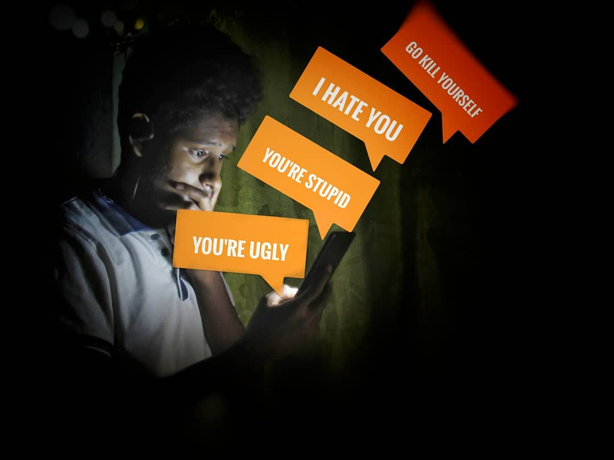

Podľa výskumu, ktorý zrealizovalo Slovenské národné stredisko pre ľudské práva, sa až 37 % žiakov stretlo s kyberšikanou.
 Späť.
Slovensko sa podľa najnovších údajov Eurostatu radí medzi krajiny Európskej únie, kde sú nenávistné prejavy na internete medzi mladými ľuďmi najrozšírenejšie. Až dve tretiny Slovákov vo veku 16 až 29 rokov sa v minulom roku stretli s online správami, ktoré považovali za nepriateľské, posmešné alebo ponižujúce voči jednotlivcom alebo skupinám ľudí. Táto alarmujúca štatistika stavia Slovensko na nelichotivé štvrté miesto v rámci celej EÚ, pričom horšie výsledky vykázali len Estónsko, Dánsko a Fínsko.
Podľa výskumu, ktorý zrealizovalo Slovenské národné stredisko pre ľudské práva, sa až 37 % žiakov stretlo s kyberšikanou.
 Späť.